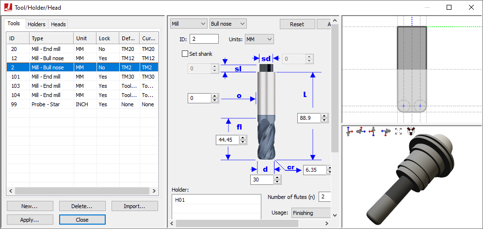

Adding Tooling Definitions to the Simulation
VM can attach solid model representations of tools and their holders to the machine model when they are loaded. Once attached, they become part of the collision detection process. When Material Removal Simulation (MRS) is enabled, VM will modify stock and machinable fixture objects to simulate the cutting actions of the tool. VM supports a variety of tool types for milling, turning and hybrid additive applications, and can support both 2D revolved contour or generic 3D shapes for holder definitions. Select Simulation»Tools (Ctrl Alt T) to activate the Tools/Holders/Heads dialog.
{kind=link}
Select the Tools and Holders tabs to switch between tool and holder definitions. Select the New button to define a new tool or holder. Select an existing definition and use the central pane to make modifications; press the Apply button when done. Modified entries are listed in red until changes are applied. Select an existing definition and press the Delete button to remove it. Select the Heads tab to load or unload head attachments that are defined within the model (see “Heads” for more information ).
All tool definitions (excluding probes) include a cutting color selection, which is used with MRS (material removal simulation) to identify surfaces on the in-process stock formed by the cutting or additive action of the tool. Tools also include a usage setting, which can override the default MRS cutting tolerance, loosening it for Semi-Finishing and Roughing tools (to reduce CPU usage).
When exiting the Tools/Holders/Heads dialog, VM will check for consistency between the tool length settings as defined for each tool, and the corresponding tool length compensation settings as defined in the Simulation»Controller window Tool Compensation tab (see “Setting Tool Compensation”). Inconsistencies are listed along with the choice to correct problems for all, selected or no tools.
Tool and holder definitions are automatically saved in the verification setup (.vsw) file when the program is completed. This setup file will be reused on subsequent runs to quickly reestablish the tooling necessary for an accurate simulation.
ICAM provides “Manufacturing Extractors” for many popular CAM systems, which automatically create tool and holder definitions that match those used in the NC program.
Lathe Tool Definition
Select “Lathe” as the type in the tool builder dialog to define the shape of the turning tool insert. The following insert shapes are supported:
- Round:
A round or circular insert.
- Trigon:
A three cornered insert resembling a triangle, but with an intermediate angle on the sides, to allow for a higher included angles at the tips.
- Diamond:
A four-sided insert with two acute angles.
- Symmetrical:
Any “n” equal sided insert.
- Thread:
A three cornered threading insert, with a tooth shape on each corner.
- Groove:
A single or double sided insert that can be used for threading, grooving or cut-off.
- Profile:
An insert defined by a 2D profile.
- Generic:
An insert defined by an STL mesh.
Inserts are defined in the ZX plane of the machine. The blue dotted line represents the positive Z-axis of the machine. The red dotted line represents the positive X-axis of the machine. The green dot at the intersection point of these two lines is the point on the tool where tool path traces will originate. This is the center of the nose (or of the round insert) and not the theoretical tool tip.
The supporting body (e.g., the bar) of the turning tool must be defined separately as a holder, and then associated with the insert by selecting the holder by name. As explained in the “Holder Definition” topic, two controlling points are defined on a holder: The SCP (spindle contact point) defines the mating point of the holder with the turret (or another tool holding device). The TCP (tool contact point) defines the mating point of the holder with either the nose center or the center of the insert (as shown by a standard VM “tool icon”). The orientation of the insert on the holder can be set by defining a Y-axis TCP rotation component (in the holder definition). The Left and Right settings also affect the orientation of the insert with respect to the holder.
Milling Tool Definition
Select “Mill” as the type in the tool builder dialog to define one of the following types of revolved tool used for milling or drilling:
- End mill:
A sharp corner end mill.
- Ball nose:
An end mill with corner radius equal to ½ the tool diameter.
- Bull nose:
An end mill with corner radius less than ½ the tool diameter.
- Drill:
A typical drilling tool.
- APT 7:
A milling tool whose shape is defined by an APT standard CUTTER command.
- Profile:
A tool defined by a revolved 2D profile.
- Generic:
A tool defined by one or more cutting and non-cutting STL meshes.
Milling tools have three sections, as follows.
- Cutter:
The bottom “Flute length” portion of the tool is the part that is permitted to come in contact both with machinable fixture components and with the part, to the limit defined by the gouge tolerance.
- Body:
An additional portion of the tool up to the “Cutter length” height that is non-cutting.
- Shank:
The top “Shank length” portion of the tool, also non-cutting, which typically mates with the holder.
When running with GENER, VM will use the APT CUTTER command to automatically define a default milling tool if a tool definition does not exist for the one being loaded. Tools defined in this way have a cutting length equal to the total tool length, and do not have a shank or associated holder. Automatically created tools are by default “unlocked”, meaning that their definition will change each time a CUTTER command is encountered. Manually defined tools are locked by default, and are not affected by CUTTER statements in the CL file. Automatic tool definitions are not possible with CERUN.
Tool holders, if used, must be defined separately and then associated with the tool by selecting the holder by name. As explained in the “Holder Definition” topic, two controlling points are defined on a holder: The SCP (spindle contact point) defines the mating point of the holder with the turret (or another tool holding device). The TCP (tool contact point) defines the mating point of the holder with the tool (as shown by the intersection of the dotted blue and green lines).
Probe Tool Definition
Select “Probe” as the type in the tool builder dialog to define one of the following types of probes used for on-machine measurement:
- Straight:
A probe with a single straight stylus.
- Star:
A probe with a multi-tip star stylus (5 balls).
When a probe tool is loaded, VM is aware that it is a probe and that it cannot be used for cutting. VM has macro functions and variables that can be used to query the results of a probe touch (see “Probe and Collision Test Functions”).
Probe tools define just the stylus; the probe body must be defined as a holder to which the stylus is then attached. Holders are defined separately and then associated with the probe by selecting the holder by name. As explained in the “Holder Definition” topic, two controlling points are defined on a holder: The SCP (spindle contact point) defines the mating point of the holder with the turret (or another tool holding device). The TCP (tool contact point) defines the mating point of the holder with the top of the probe stylus (as shown by the intersection of the dotted blue and green lines).
Additive Tool Definition
Select “Additive” as the type in the tool builder dialog to define one of the following types of additive manufacturing (AM) tools:
- Profile:
A tool defined by revolved 2D profiles of the body and additive material regions.
- Generic:
A tool defined by one or more body and additive STL meshes.
AM tools have two sections, as follows.
- Body:
Defines the physical body of the AM tool.
- Additive:
Defines the shape of the material that will be added to the in-process stock when the AM tool is active.
Tool holders, if used, must be defined separately and then associated with the AM tool by selecting the holder by name. As explained in the “Holder Definition” topic below, two controlling points are defined on a holder: The SCP (spindle contact point) defines the mating point of the holder with the turret (or another tool holding device). The TCP (tool contact point) defines the mating point of the holder with the AM tool (as shown by the intersection of the dotted blue and green lines).
Holder Definition
A holder can be a stationary or rotating device that connects the tool to the machine. In the case of complex tool assemblies, a holder can be connected to another “parent” holder, which in turn is connected to the machine or to another holder, and so on. VM supports two types of holders:
A Profile holder is one that is defined as a surface of revolution. The profile is defined in terms of its radial and axial offsets along the machine’s tool axis. This simple 2D profile is then swept in a complete 360° arc to create the final tool holder shape.
A Generic holder is any fixed device that holds the tool and/or the tool assembly. For example, this can be a simple holding bar for turning applications or a complex right-angled head assembly for milling applications. The generic holder body is constructed by importing, positioning, aligning and defining material properties of one or more STL objects in the exact same way as is done for part, fixture and stock components (see “Adding Parts, Fixtures and Stock to the Simulation”).
A holder definition includes two contact points that define how holder is connected to the machine and the tool, or to other holders:
The SCP is the spindle contact point, which is the reference point on the holder that aligns with the gauge point of the spindle or with the TCP of the parent holder. A profile holder’s axis is aligned with the axis of the spindle. A generic profile holder’s xyz reference frame is aligned with the xyz reference frame of the spindle.
The TCP is the tool contact point, which is the reference point on the holder where the top of the cutting tool body is attached (extending downwards). For generic holders you can also define the orientation of the tool at the contact point, in terms of its X-axis, Y-axis and Z-axis rotations.
Select the “internally geared” option on the generic holder dialog when a generic holder represents a head assembly. This tells VM that the spindle force is transmitted through the holder from the SCP to the TCP points. You can also define a spindle ratio in cases where the gearing is not 1:1.